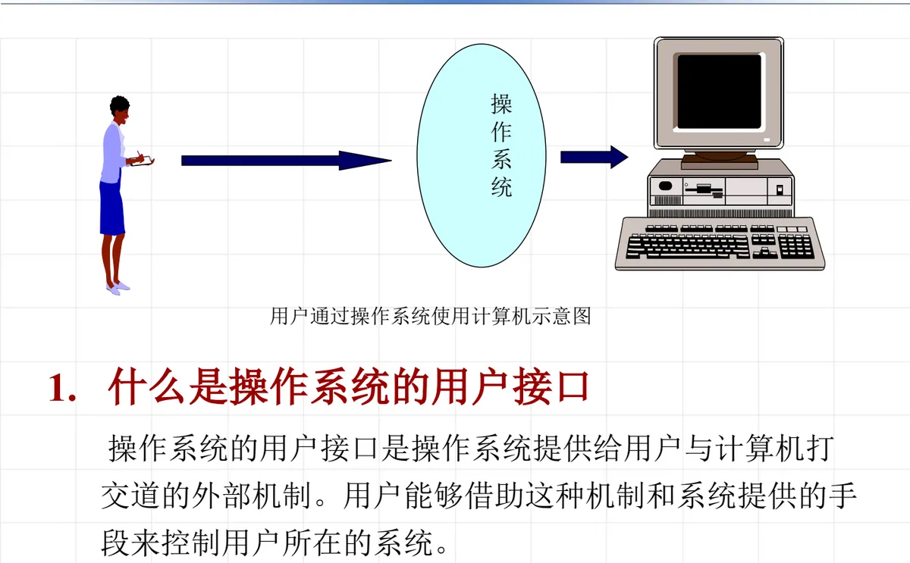
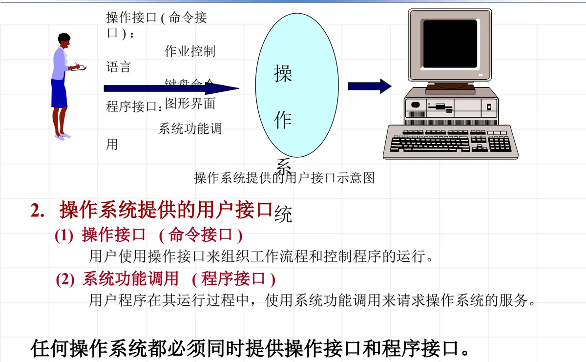
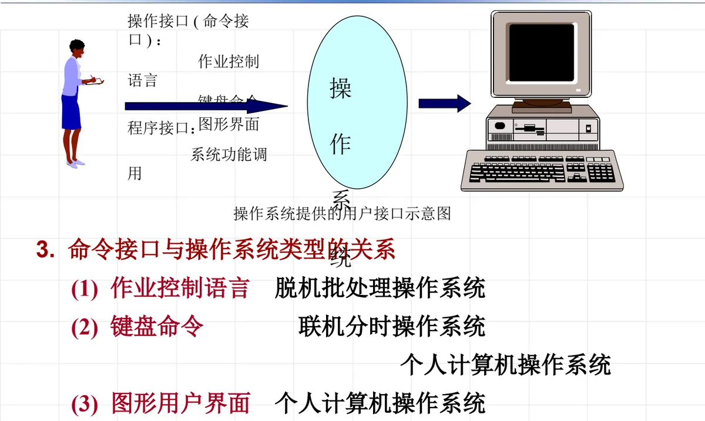
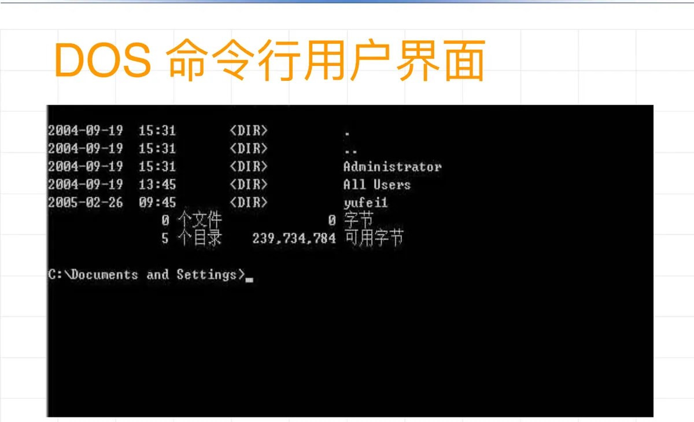
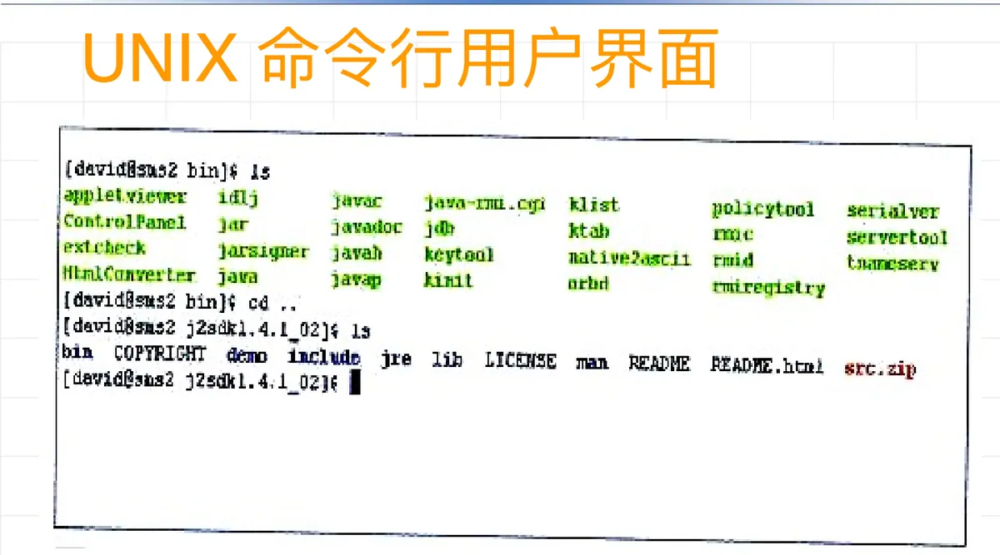
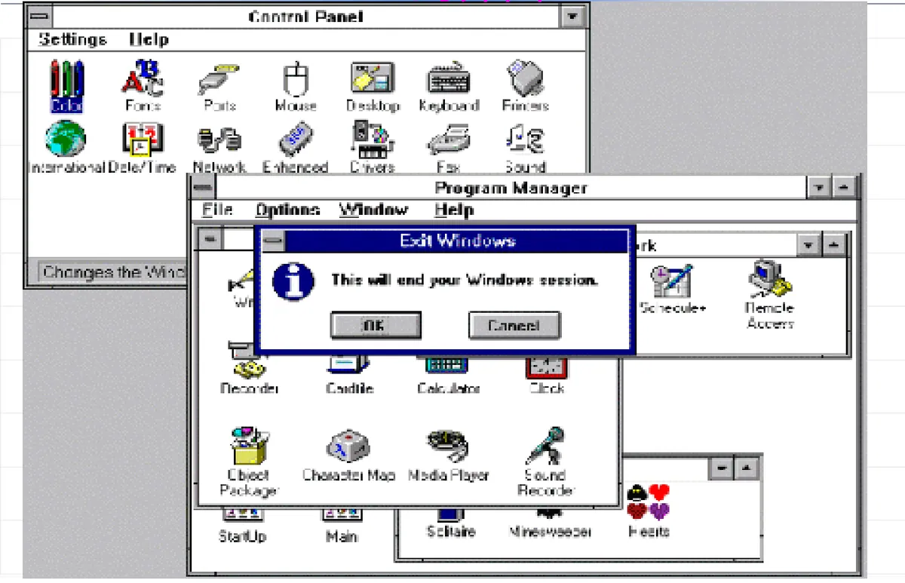
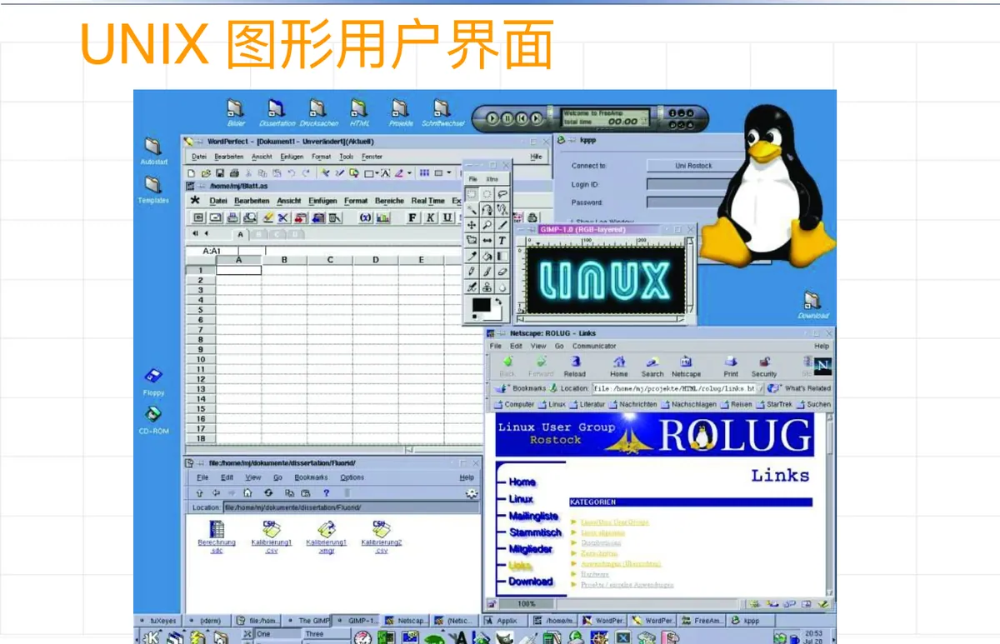

操作系统原理 · 第 3 章 用户接口
3.3 用户接口
环境建好、程序也能跑了，接下来的问题是：用户和用户程序究竟通过什么与操作系统打交道？答案就是操作系统的用户接口。这一节先给用户接口下定义、把它分成命令接口和程序接口两大类，再看命令接口的三种形态（作业控制语言、键盘命令、图形用户界面）各自服务于哪类操作系统，最后分别展开它们的具体内容。
1. 什么是操作系统的用户接口
操作系统的用户接口是操作系统提供给用户与计算机打交道的外部机制。用户借助这种机制和系统提供的手段，来控制用户所在的系统。它处在用户（含用户程序）与操作系统之间，是用户能看到、能使用的操作系统的「门面」。

2. 操作系统提供的两类用户接口
用户接口按使用者的身份分成两类，它们对应两种完全不同的使用场景：
- 操作接口（命令接口）：包括作业控制语言、键盘命令、图形界面。用户使用操作接口来组织工作流程和控制程序的运行。
- 程序接口（系统功能调用）：用户程序在其运行过程中，使用系统功能调用请求操作系统的服务。
前者面向人，后者面向程序。需要强调的是：任何操作系统都必须同时提供操作接口和程序接口——只给人用而程序无法请求服务，或只给程序调用而用户无法组织作业，都不成其为一个完整的操作系统。

3. 命令接口与操作系统类型的关系
三种命令接口并不是任意搭配的，它们与操作系统的类型一一对应，背后的原因是各类系统对「用户如何介入」的要求不同：
- 作业控制语言——脱机批处理操作系统；
- 键盘命令——联机分时操作系统、个人计算机操作系统；
- 图形用户界面——个人计算机操作系统。

4. 作业控制语言
在脱机方式下，操作系统提供作业控制语言 JCL（Job Control Language）。之所以是它，是因为批处理系统中用户不在机器旁，只能用事先写好的一叠控制语句把「先做什么、再做什么」交代清楚。
（1）什么是作业控制语言
它是一种命令语言，包括了对作业处理的命令和资源请求命令。
（2）批处理系统中作业的组织
一个完整的作业由三部分组成：
- 作业申请：作业名、需用 CPU 时间、最迟完成时间、资源请求（主存、外部设备）等；
- 操作说明书：编辑命令、编译命令、连接命令、运行命令等；
- 程序与数据。
下面是 IBM 系列机器上 JCL 的一个例子，可以从中看出它「一行一条控制语句、以 // 开头」的写法：
// HAROLD JOB,WILSON,MSGLEVEL=(2,0),PRTY=6,CLASS=b
// COMP EXEC PGM=IEYFORT
// SYSPRINT DD SYSOUT=A
// SYSIN DD *
...（源程序卡片）...
/*
// GO EXEC PGM=FORTLINK
// FTOTF001 DD UNIT=SYSCP
// GO SYSIN DD *
...（数据卡片）...
/*
//5. 键盘命令
系统为联机用户（交互作业的用户）提供键盘命令。
（1）什么是键盘命令
它是操作系统为联机用户提供的一种操作命令，用户通过这组命令直接控制和干预程序的运行。与 JCL 相比，键盘命令最大的特点是「即时」：输入一条，系统立刻响应。
（2）键盘命令的功能
- 分时操作系统——用于注册、通信、注销的各类命令；
- 个人计算机操作系统——用于通信的各类命令。
（3）一个实例：DOS 系统的键盘命令
DOS 的键盘命令按管理对象分成几组，是理解命令接口分类的好例子：
| 类别 | 命令 |
|---|---|
| 文件管理 | COPY、COMP、TYPE、DEL、REN |
| 磁盘管理 | FORMAT、CHKDSK、DISKCOPY、DISKCOMP |
| 目录管理 | DIR、CD、MD、RD、TREE |
| 日期、时间、系统设置 | DATE、TIME、VER、VOL |
| 应用程序 | MASM、LINK、DEBUG |
可以看到，这些命令覆盖的正是操作系统管理的几类资源——文件、磁盘、目录、系统状态，最后一行则是启动应用程序（汇编器、连接器、调试器）的命令。下面分别是 DOS 和 UNIX 的命令行界面：


6. 图形用户界面
图形化用户界面是良好的用户交互界面，它把菜单驱动、图符驱动、面向对象技术集成在一起，形成一个图文并茂的视窗操作环境。它的发展脉络大致是：1984 年苹果公司推出 Macintosh；1986 年首款用于 UNIX 的窗口系统 X Window System 发布；1992 年微软公司发布 Windows 3.1。
（1）菜单驱动方式
这是面向屏幕的交互方式，把键盘命令改成用屏幕来体现：命令和系统能完成的操作，用菜单分类、分窗口地在屏幕上列出；用户像点菜一样选择命令或某种操作，控制系统去完成指定的工作。菜单系统的类型有多种，如下拉式菜单、上推式菜单和随机弹出式菜单。
（2）图符驱动方式
这是一种面向屏幕的图形菜单选择方式。图符（Icon）也称图标，是一个小小的图形符号，它代表操作系统中的命令、系统服务、操作功能、各种资源。当需要启动系统命令、请求系统资源或操作功能时，可以选择代表它的图符，并借助标记输入设备（鼠标器），用鼠标的点击和拖拽功能，完成命令和操作的选择及执行。
（3）图形化用户界面的特点
- 所有程序以统一的窗口形式出现；
- 提供统一的菜单格式；
- 系统资源、系统命令、操作功能以图标表示；
- 统一的操作方法。
Microsoft 公司的 Windows 就是这种图形化用户界面的代表。下面是 Windows 3.11 的界面和 UNIX 的图形用户界面：


本节小结
- 用户接口是操作系统提供给用户与计算机打交道的外部机制，用户借助它控制系统。
- 用户接口分两类：操作接口（命令接口，含作业控制语言、键盘命令、图形界面）用于组织工作流程、控制程序运行；程序接口（系统功能调用）供用户程序在运行中请求操作系统服务。任何操作系统都必须同时提供这两类接口。
- 命令接口与系统类型对应：作业控制语言对应脱机批处理，键盘命令对应联机分时和个人计算机，图形用户界面对应个人计算机。
- 作业控制语言是脱机方式下的命令语言，兼顾作业处理命令与资源请求命令；一个作业由作业申请、操作说明书、程序与数据组成，IBM JCL 是它的典型写法。
- 键盘命令面向联机用户，直接控制和干预程序运行；分时系统用它完成注册、通信、注销，DOS 的文件、磁盘、目录、系统设置与应用命令是常见实例。
- 图形用户界面集成菜单驱动、图符驱动与面向对象技术：菜单驱动把命令分类列在屏幕上供选择，图符驱动用图标代表命令与资源、靠鼠标点击和拖拽操作；统一窗口、统一菜单、图标表示资源、操作统一是它的四个特点。